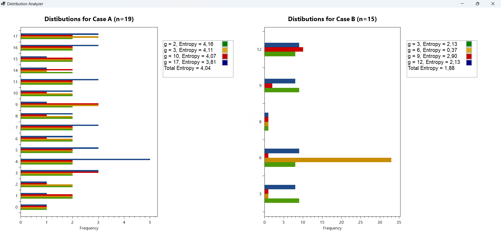

Using the setup of previous homework, from a discrete distribution generate m (e.g. m=1000 ...) samples of size n (e.g., n = 20, 30, 100, ...). Compute the distribution of the sampling average. Determine the average of the distribution of the averages of the samples, and the variance, discussing the observed relationship with the mean and variance of the parent (theoretical) distribution.
This application simulates the process of drawing samples from a discrete probability distribution, calculating the sample means, and visualizing the distribution of those means in a histogram. The user can specify how many samples (m) and how large each sample is (n), and the app will:
The screenshots below show the output of the realized program, with 1000 samples of size 30, derived from the theoretical discrete parent distribution [0, 1, 2] with probabilities [0.2, 0.3, 0.5].
The mean of the sampling distribution is very close to the theoretical mean because the samples are drawn according to the parent distribution. This relationship holds true regardless of changes in the sample size (n) or the number of samples (m). Similarly, the variance of the sample mean distribution is smaller than the variance of the parent distribution. This reduction occurs because the variance of the sample mean decreases as the sample size (n) increases.
This exercise involves generating and analyzing the distributions of values resulting from modular exponentiation operations, followed by calculating the entropy of these distributions for two different cases. The goal is to observe how the entropy, a measure of randomness or unpredictability, varies based on different parameters and to compare the results between two different modular systems.
The two cases represent different values for the modulus \( n \) and a set of base values \( g \) , leading to different distributions. In each case, the distributions are generated by calculating \( g^u \) mod \( n\) for \( u = 0, 1, 2, ..., maxU \) , were \( g\) is the base and \( n\) is the modulus. The entropy of each distribution is computed to assess the "spread" or uniformity of the results, with higher entropy indicating a more even distribution (more randomness) and lower entropy indicating a more clustered or predictable distribution.

Entropy Differences:
In Case A, entropy values will likely be higher across most \( g \) values because the prime modulus \( n = 19 \) enables more evenly distributed values. Even if some values of \( g \) produce less random distributions, the overall entropy will tend to be higher.
In Case B, entropy values will generally be lower due to the structure imposed by the non-prime modulus. The distributions will have more repetitive patterns, and the entropy will be smaller as a result.
Practical Implications for Cryptography:
Higher Entropy (Case A): A higher entropy distribution is typically more desirable in cryptographic applications, as it indicates more uniform randomness, which is crucial for security (e.g., when generating keys or random numbers).
Lower Entropy (Case B): A lower entropy distribution, on the other hand, may be less secure in cryptographic contexts because it suggests that the outcomes are more predictable or structured, making the system potentially more vulnerable to attacks.
The following code was used to carry out this exercise. Specifically, the following actions are performed in succession: generation of distributions, calculation of entropies and display of results for both cases under consideration.
{kind=link}
{kind=link}